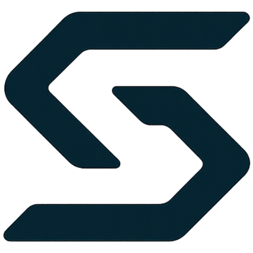
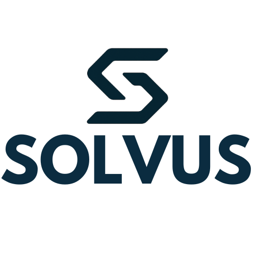
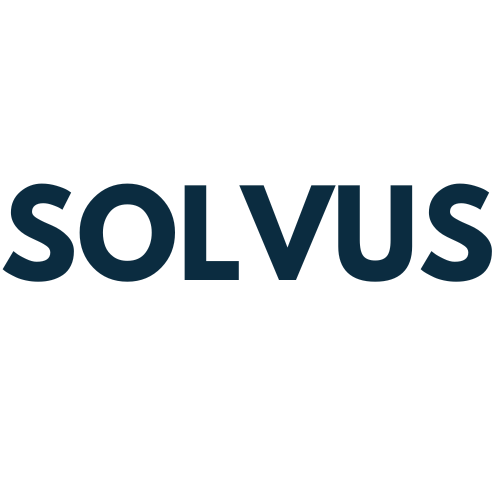
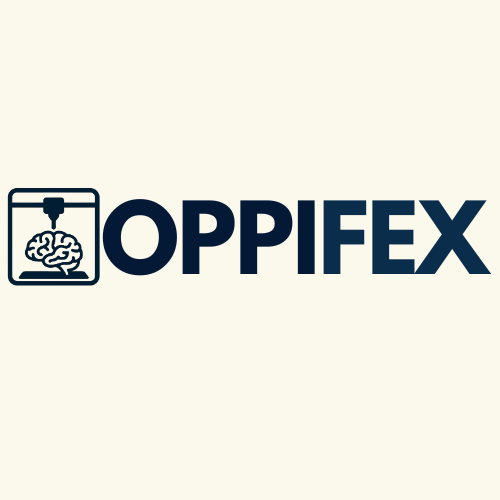
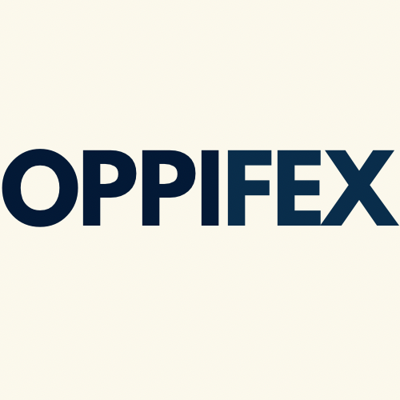

Permite que escuelas, makers, pymes y personas curiosas conviertan ideas digitales en objetos físicos, acercando la fabricación a más gente.
Sin embargo, el proceso sigue siendo percibido como complejo, técnico y poco accesible. La mayoría se encuentra con una curva de aprendizaje alta y poca guía clara.
El desafío no está solo en la máquina: aparece cuando alguien intenta usarla sin acompañamiento y se enfrenta a decisiones técnicas en cada paso.
Perfiles, capas, velocidades y retracciones que influyen en el resultado y no siempre explican qué cambia realmente.
Cada slicer usa nombres y menús diferentes, obligando a reaprender todo cada vez que se cambia de entorno.
Piezas despegadas, boquillas tapadas, soportes mal generados y fallos que suelen aparecer sin una causa clara para el usuario.
El aprendizaje suele darse a prueba y error o con videos sueltos, sin un recorrido pedagógico guiado.
Todo esto hace que muchas personas abandonen la impresora antes de sentirse realmente cómodas usándola.
Solvus es una startup tecnológica desarrollada en el marco de esta pretesina, pensada como si fuera una empresa real que diseña herramientas para resolver procesos complejos.
El nombre viene de solvere: desatar, destrabar, resolver. Resume la idea de tomar procesos técnicos y volverlos manejables.
Funciona como identidad principal desde la que se pueden desplegar soluciones de impresión 3D, automatización, IA y educación digital.
Más que una app aislada, plantea un ecosistema que ordena el recorrido del usuario desde la idea hasta la pieza impresa.
Estética y narrativa pensadas para sonar como una startup con potencial de crecimiento e inversión.
Transformar procesos complejos en flujos claros e intuitivos, donde cada decisión esté explicada y tenga sentido para el usuario.
Estar presente en todo el recorrido de creación digital, desde la primera impresión hasta proyectos avanzados.
Bajar el miedo a “tocar algo mal” y permitir que más personas se animen a experimentar y aprender con impresión 3D.
Convertirnos en un punto de referencia en automatización aplicada a la creación digital en ámbitos educativos y productivos.
Acercar tecnologías que hoy parecen reservadas a especialistas, para que puedan ser usadas también por escuelas, makers y pymes.
Que las personas pongan su energía en diseñar e innovar, mientras la plataforma se ocupa del trabajo técnico más pesado.
Configuraciones pensadas y justificadas, basadas en datos y experiencia, no solo en prueba y error.
Interfaces claras, lenguaje cercano y modos adaptados a distintos niveles de conocimiento.
Uso de nuevas tecnologías para automatizar tareas sin perder el control humano sobre el proceso.
Explicar lo que pasa “detrás de escena”, evitando que el sistema se sienta como una caja negra.
Tomar en cuenta los impactos educativos y productivos de cada decisión de diseño y automatización.
Asistente inteligente para automatizar y guiar todo el proceso de impresión 3D.
Acompaña en la configuración de impresiones, elección de modelos y resolución de dudas técnicas.
Se coloca por encima de los slicers, conectando parámetros técnicos con objetivos concretos de cada usuario.
Permite aprender mientras se imprime, explicando qué cambia cada ajuste y por qué se recomienda.
Generación automática de perfiles optimizados según material, impresora y objetivo de la impresión, listos para importar al slicer.
Modelos asociados a configuraciones sugeridas, pensadas para educación, práctica y proyectos reales.
Chat especializado en impresión 3D que responde dudas concretas, propone soluciones y explica el porqué de cada cambio.
Modo guiado para escuelas y principiantes, que convierte cada impresión en una instancia de aprendizaje.
De “no sé qué tocar” a un perfil listo para imprimir, con cada paso explicado de forma clara y reutilizable.
Reduce la cantidad de piezas fallidas, el desperdicio de material y el tiempo perdido en intentos que no llegan al resultado esperado.
Cada impresión se aprovecha para entender mejor cómo funciona la impresora, los materiales y los parámetros.
Optimiza los tiempos de preparación y reduce la necesidad de repetir pruebas desde cero para ajustar un mismo modelo.
Sirve tanto para aulas como para laboratorios, makerspaces o pequeñas empresas que usan impresión 3D.
Docentes y estudiantes que quieren incorporar impresión 3D sin tener que volverse especialistas técnicos.
Personas curiosas que imprimen de forma frecuente y necesitan una herramienta que ordene su flujo de trabajo.
Espacios que ofrecen impresión 3D como servicio y buscan reducir errores, tiempos muertos y retrabajos.
Equipos que prototipan productos y necesitan procesos claros, repetibles y bien documentados.
Personas que dan sus primeros pasos y requieren un acompañamiento guiado desde el inicio.
Versión gratuita con funciones básicas para probar y aprender, ideal para primeras experiencias.
Licencias pensadas para instituciones, con herramientas adicionales, gestión de grupos y contenidos pedagógicos. (Análisis del cliente)
Funciones avanzadas para labs, talleres y pymes que necesitan más control, reportes y personalización. Precio: $6
Acceso a modelos, configuraciones y proyectos curados, listos para descargar e implementar. Precio: $10
Cómo se sostiene Oppifex en el tiempo: qué se necesita para empezar, cuánto cuesta operarlo y de dónde podrían venir los ingresos.
Dominio, hosting, servidores, base de datos, primeros créditos de IA, diseño de marca y desarrollo del MVP. Es la inversión necesaria para poner en marcha la plataforma.
Gastos mensuales de servidores, base de datos, consumo de IA, mantenimiento del software y actualización de la biblioteca STL.
Aumentan con la cantidad de usuarios: más consultas a la IA, más tráfico y más almacenamiento de archivos y cuentas.
Planes educativos y profesionales, más la biblioteca premium de modelos y posibles talleres o capacitaciones vinculadas a Oppifex.
Qué volumen de clientes necesita Oppifex para cubrir sus costos y cómo podría comportarse el proyecto en distintos contextos.
Se calcula a partir de los costos mensuales y el ingreso promedio por usuario. Marca el momento en el que la startup deja de perder plata.
Pocas instituciones y usuarios premium. Se cubre parte de los costos, pero el crecimiento es lento y depende de seguir ajustando gastos.
Adopción gradual en escuelas, labs y makerspaces. Se alcanzan los costos y queda margen para mantener y mejorar la plataforma.
Crecimiento rápido en instituciones y pymes. Oppifex se vuelve una referencia educativa y técnica, permitiendo una mayor reinversión.
La versión gratuita funciona como puerta de entrada: permite probar la herramienta y convierte una parte de los usuarios en clientes pagos.
Se plantea una proyección simple a 12 meses para imaginar cómo podría evolucionar Oppifex con un crecimiento moderado.
Aumento gradual de cuentas gratuitas y de instituciones que contratan planes educativos o profesionales a lo largo del primer año.
A medida que crece la base de usuarios pagos, los ingresos mensuales comienzan a superar los costos operativos de la plataforma.
Parte del excedente se destina a mejorar el motor de recomendaciones, ampliar la biblioteca STL y sumar nuevas funciones educativas.
Que Oppifex pueda consolidarse como herramienta estable y mejorada año a año, sin depender solo de inversión externa.
Más allá de los números, el objetivo es que Oppifex se mantenga útil, actualizado y accesible para la comunidad educativa y productiva.
Ajustar servidores y servicios de IA según la demanda, evitando sobredimensionar costos cuando la cantidad de usuarios aún es baja.
Monitorear gastos tecnológicos y renegociar servicios externos para que el crecimiento no vuelva inviable la herramienta.
Mantener siempre una versión gratuita orientada a escuelas y principiantes, incluso cuando crezcan los planes pagos.
Deriva de solvere, asociando directamente la marca con la idea de resolver y destrabar procesos complejos.
Suena a startup tecnológica real, exportable y profesional, no a un proyecto aislado.
No encierra a Solvus solo en impresión 3D; abre la puerta a otras líneas de automatización y herramientas digitales.
Funciona bien como logo, isotipo, nombre de empresa y marca dentro de interfaces modernas.
Propuesta clara de valor: simplificar procesos complejos de impresión 3D. Enfoque educativo y técnico a la vez, con una narrativa de marca consistente.
Crecimiento del uso de impresión 3D en escuelas, labs y pymes. Espacio para soluciones que combinen automatización, IA y educación digital.
Startup en etapa inicial, sin producto aún desarrollado. Necesidad de recursos técnicos y pruebas reales para validar la solución.
Competidores más grandes con herramientas instaladas. Cambios rápidos en software y hardware que exigen actualización constante.
Colores pensados para comunicar tecnología, seriedad y claridad, sin caer en un estilo gamer.
Color principal de Solvus. Se usa en acentos, botones y elementos clave de la interfaz.
Fondo base. Aporta sensación de profundidad y ambiente tech oscuro premium.
Usado en texto principal y elementos de alto contraste. Refuerza la lectura.
Se aplica en detalles interactivos, indicadores y pequeños highlights.
Resaltados suaves y brillos sobre fondos oscuros. Da sensación de “luz” tecnológica.
La combinación tipográfica busca equilibrio entre lo técnico, lo legible y lo moderno.
Usadas en títulos y headings. Transmiten modernidad y claridad, con buen peso para destacar conceptos clave.
Ejemplo:
SOLVUS · Tecnología que resuelve
Tipografía principal de cuerpo de texto. Optimizada para pantalla, legible y perfecta para explicaciones técnicas.
Ejemplo:
Texto descriptivo y párrafos de la presentación.
Se reserva para números, parámetros técnicos y referencias a archivos o formatos (.ini, G-code, etc.).
Ejemplo:
layer_height = 0.20 · nozzle = 0.4mm
Títulos grandes centrados, subtítulos cortos y cards con texto compacto aseguran una lectura rápida a simple vista.
Variantes de marca para Solvus (startup) y Oppifex (producto) listas para aplicar en la presentación y en piezas futuras.




